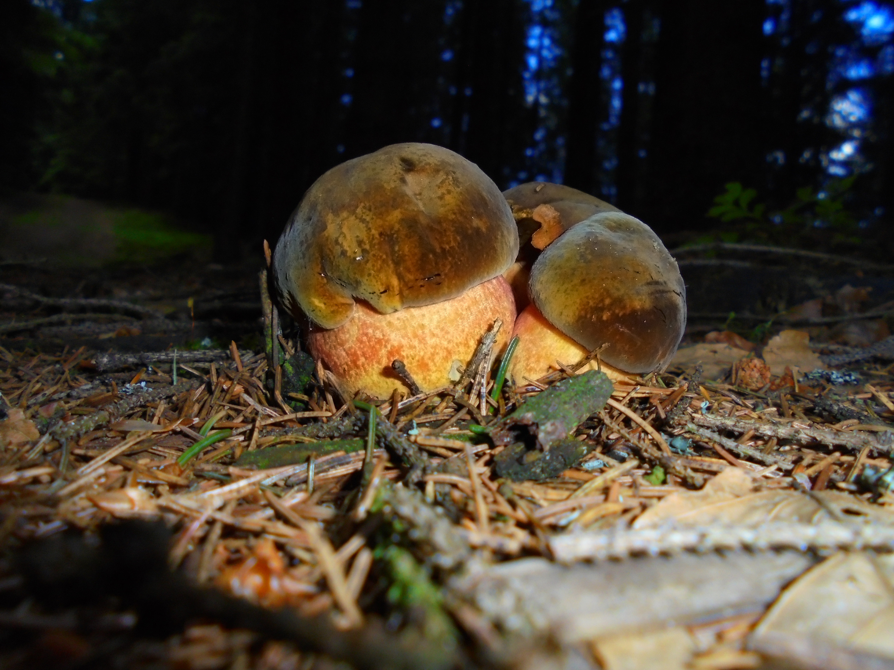

King Bolete Mushrooms
Boletus edulis.
Boletus edulis, commonly known as the porcini, king bolete, or penny bun, is a highly prized edible mushroom found in deciduous and coniferous forests across the Northern Hemisphere. It produces large, thick fruiting bodies during summer and autumn, with a convex to flat brown cap up to 30 cm (12 in) wide and a stout, club-shaped stem. Unlike gilled mushrooms, B. edulis has tubes and pores underneath the cap through which spores are released. The mushroom is mycorrhizal, forming symbiotic relationships with tree roots, and is widely used in European, Russian, and international cuisines, often in soups, risottos, and pasta dishes. It is considered safe and choice for consumption, with very few poisonous look-alikes.
Key features include a convex to flattened brown cap, thick club-shaped stem with fine reticulation (net-like pattern) on the upper portion, and white tubes that mature to greenish-yellow, eventually producing an olive-brown spore print. The flesh is white, firm, and does not change color significantly when cut or bruised. B. edulis can be distinguished from similar species by its whitish pores, netted stalk pattern, and lack of blue staining (as seen in the devil’s bolete, Rubroboletus satanas) and by the mild taste compared with the bitter Tylopilus felleus.

Blue Staining and Red Pored Bolete Mushrooms
Rubroboletus pulcherrimus.
Rubroboletus pulcherrimus, commonly called the red-pored bolete, is a large, poisonous mushroom found in western North America, including California, New Mexico, and Washington. It grows in mixed forests, often near tanbark oaks, Douglas-fir, and grand fir, fruiting in autumn. This mycorrhizal species forms symbiotic relationships with tree roots, helping exchange nutrients between soil and trees. The mushroom is considered potentially fatal, with at least one documented human death. It should never be consumed.
The cap is convex to flat, 10–25 cm wide, and reddish-brown, sometimes velvety or slightly scaly. The pores on the underside are bright red and turn blue or black when bruised. The stem is thick and yellow to yellow-brown, with a red net-like pattern on the upper part. The mushroom’s flesh is yellow, and its spore print is olive-brown. It may be confused with other red-pored boletes, but the red pores, blue-staining reaction, and netted stem help identify it.